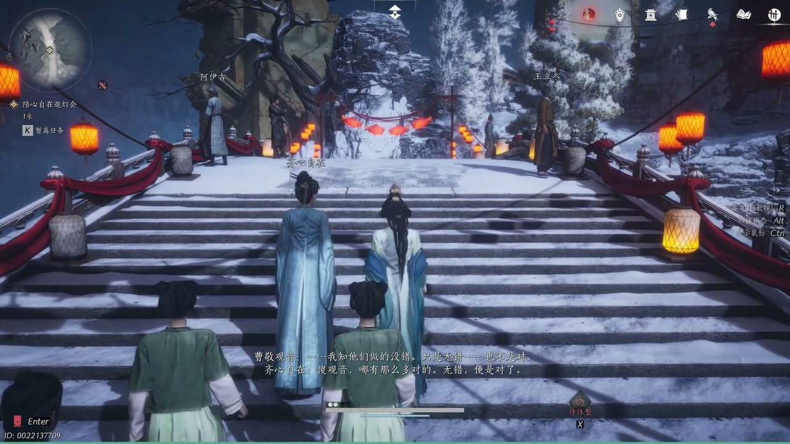
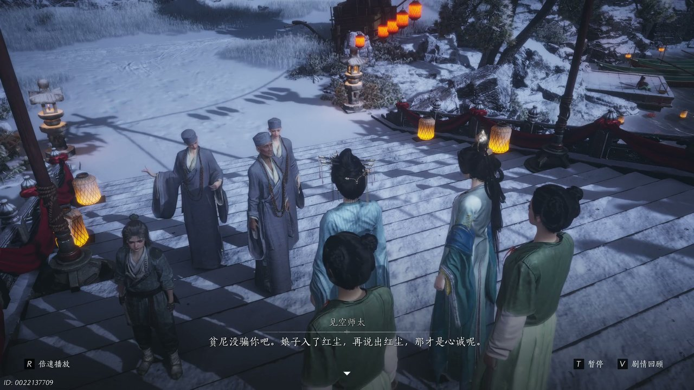
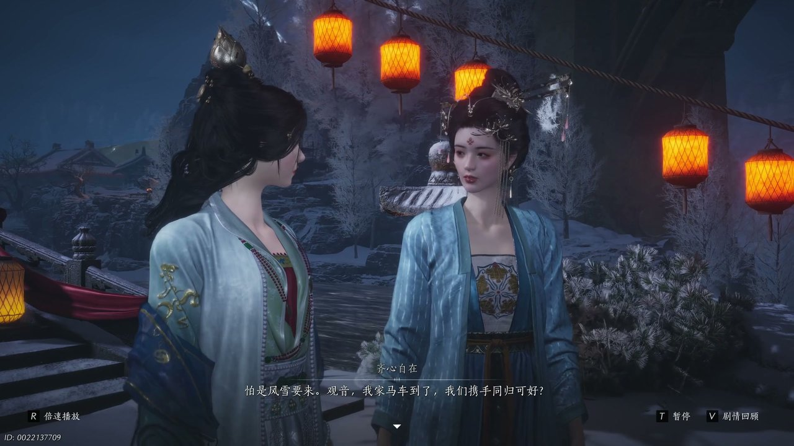
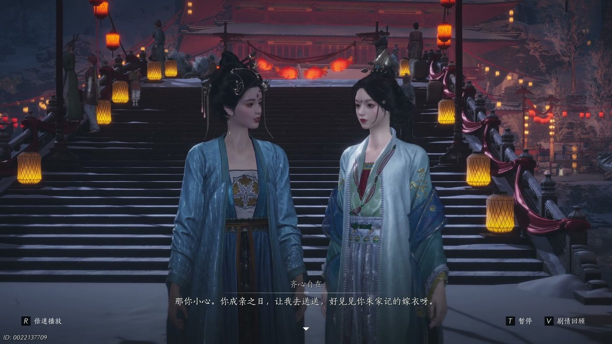
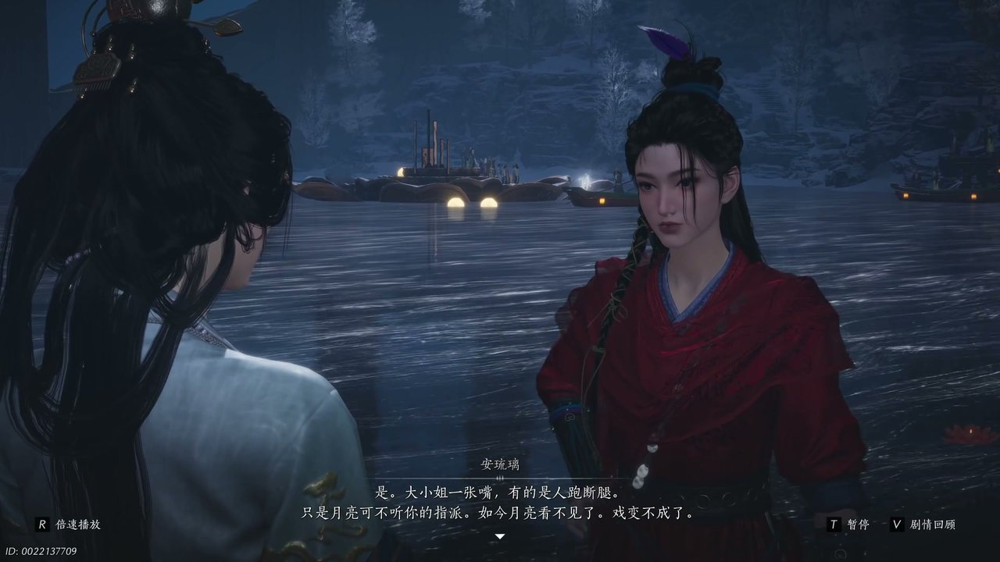
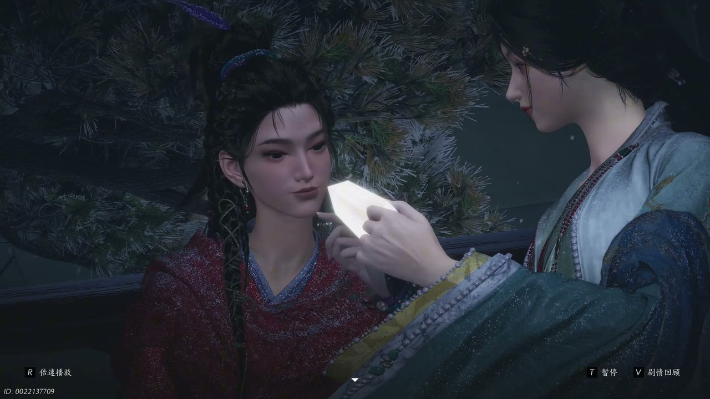

燕云背后的故事：第14集 月亮船
燕云背后的故事：第14集 月亮船

朋友们，上一集咱们说到——血经治愈心魔、安琉璃许诺长安、曹敬观音心生向往，两段羁绊与未知前路交织缠绕。新来的朋友可能纳闷，一心奔赴长安的曹敬观音，为何迟迟没有动身远行？简单说，她身困曹家枷锁，家族婚约与世俗束缚层层牵绊，让她难以肆意奔赴自由。可他哪知道，凉州暗流涌动，未知危机已然悄然逼近二人。这不，凉州灯会落幕不久，曹敬观音游走城中，偶遇旧友齐心自在，一场闲谈揭开俗世羁绊的沉重。

灯会余温未散，凉州街巷晚风微凉，灯火残光斑驳落在青石路面上。曹敬观音与齐心自在并肩缓步而行，周遭零星游人尚未散去，晚风轻轻撩动二人衣袂。齐心自在望着心绪沉沉的曹敬观音，轻声感慨婚嫁之事本是两性之好，并非单方面的强求得失。曹敬观音垂眸轻叹，语气淡然又无奈：“我知他们做的没错，只是无错，也不是对。”齐心自在闻言温和劝慰：“傻观音哪有那么多对的，不错便是对了。”曹敬观音微微颔首，低声念诵一句阿弥陀佛，眼底藏着难以消解的郁结，常年被困世俗与佛门之间的挣扎尽数流露。片刻后，见空师太寻来，眉眼带着笑意，缓缓说起徒儿所见的景象，直言曹敬观音逛灯会时笑语盈盈，模样鲜活，与寺中沉静模样截然不同。

寺外庭院光影柔和，见空师太立在阶前，目光温和地打量着曹敬观音，语气满是欣慰。师太缓缓开口说道：“方才我徒儿跟我说，看见曹娘子跟另一个娘子在逛灯会，又笑盈盈的，又说俏皮话，模样真好看，跟在寺里呀一点都不一样。”她抬手轻拂衣袖，继续劝解，坦言自己从未欺瞒于她：“平民没骗你吧，娘子入了红尘，再说出红尘，那才是心诚呢。”曹敬观音闻言心绪微动，随即想起与安琉璃的约定，脚步微微挪动，急切说道：“琉璃还在等我，我得走了。”许久未见的齐心自在不舍挽留，称二人难得同游，还有诸多心事想要倾诉，希望她能多停留片刻相伴闲谈。

夜色渐深，晚风愈发寒凉，天边云层缓缓聚拢，隐隐透着萧瑟之感。齐心自在抬眸望向天际，语气郑重地对曹敬观音说道：“怕是风雪要来观音，我家马车到了，我们携手同归可好。”曹敬观音欣然应允，二人并肩走向停靠一旁的马车，沿途灯火摇曳，映得周遭景致温柔。途中二人闲谈往昔，曹敬观音笑着询问：“齐伯伯还在马车里藏酒吗？”齐心自在无奈打趣，如今已是不同光景，随即转身招呼自家孩童，温柔叮嘱幼子天哥染上风寒，切记按时服药休养。可轮氏幼子性情桀骜，挺直脊背出言反驳，称河西男儿皆是马背长大，不惧风沙病痛，直言外姓的齐心自在无权管束自己。随行女仆连忙上前打圆场，带着一众孩童躬身告退，化解了当场的尴尬局面。

孩童与仆从尽数离去后，周遭归于安静，曹敬观音望着神色疲惫的齐心自在，轻声发问：“你过得好吗？”齐心自在淡淡回应无甚不好，随即道出心中顾虑，知晓曹敬观音与人有约，不愿过多耽搁。她目光温柔地看向曹敬观音，缓缓说道：“那你小心你成亲之日，让我去送送好，见见你出家寄的嫁衣啊。”齐心自在坦言两家素来交好，往后二人仍需相互扶持，还要岁岁年年共赏凉州花灯。曹敬观音静静聆听，心中百感交集，轻声叮嘱对方务必照顾好自己。短暂寒暄过后，二人告别，曹敬观音转身奔赴约定之地，寻觅等候已久的安琉璃。

庭院月色朦胧，树影婆娑摇曳，安琉璃静静伫立亭中，身姿挺拔，已然等候许久。曹敬观音快步上前，带着几分歉意问道：“琉璃你怎么还在？”安琉璃挑眉反问：“那我应该在哪儿，这花灯会也不只有你们能逛吧。”曹敬观音连忙解释，让侍女珊瑚代为传信，告知对方无需等候，只因与齐心自在许久未见，闲谈良久才耽搁至今。安琉璃语气带着几分怅然与无奈，轻声说道：“是大小姐一张嘴，有的是人跑断腿，只是月亮可不听你的指派，如今月亮看不见了，戏变不成了。”曹敬观音满心愧疚，连连致歉，坦言是自己疏忽遗忘约定，希望对方不要介怀，言语间满是恳切与不安。

夜色渐柔，云层缓缓散开，一轮明月高悬夜空，清辉洒满庭院。曹敬观音望着圆月欣喜感叹：“呵真是稀奇，月亮竟自个儿圆了。”安琉璃见状神色舒展，带着笑意牵起曹敬观音步入亭中，抬手施展出精妙法术，将漫天月光收拢汇聚，化作温柔璀璨的光影萦绕二人周身。安琉璃望着眼前的明月，轻声诉说心愿，坦言一宵明月便足以慰藉平生。随后她细细描绘长安盛景，街市繁华、酒肆林立、万国来人，入夜后灯火万千，堪比百月凌空。安琉璃目光真挚，郑重邀约：“今夕有客可赐光明，我们去长安吧，那里就有一百个月亮。”正当二人决意奔赴长安之际，暗处忽然涌现大批不明兵士，层层围堵庭院，突如其来的危机骤然降临。
这一集看下来，我最大的感受就是乱世之中的自由期许，终究难逃现实枷锁的桎梏。上一集里我们只知道血经奇效、长安之约、三娘解执三条线索，到了这一集，我们看清俗世牵绊、花灯羁绊、长安盛景幻象三条新线索。围堵二人的神秘兵士究竟是谁派遣？安琉璃口中的长安真相是否属实？曹敬观音能否顺利挣脱曹家婚约？所有线索尽数收拢，危机骤然爆发，少东家尚未现身，曹敬观音与安琉璃身陷包围、前路未卜。下一集，二人将直面围堵危机，拼死突围奔赴前路。你觉得神秘兵士隶属何方势力？曹敬观音能否彻底斩断俗世枷锁奔赴长安？评论区留下你的猜想，点赞关注，下一集共看月下突围、奔赴长安的热血剧情！
关于我们
📱 公众号名称：三天游戏
✍️ 作者：曾三天
扫码关注公众号，获取每日最新资讯

商务合作与版权
商务合作 / 内容投稿 / 品牌推广
请关注公众号「三天游戏」后台留言联系
版权声明：本文由作者整理，转载需注明出处。